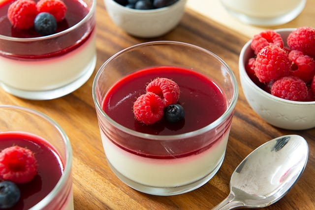
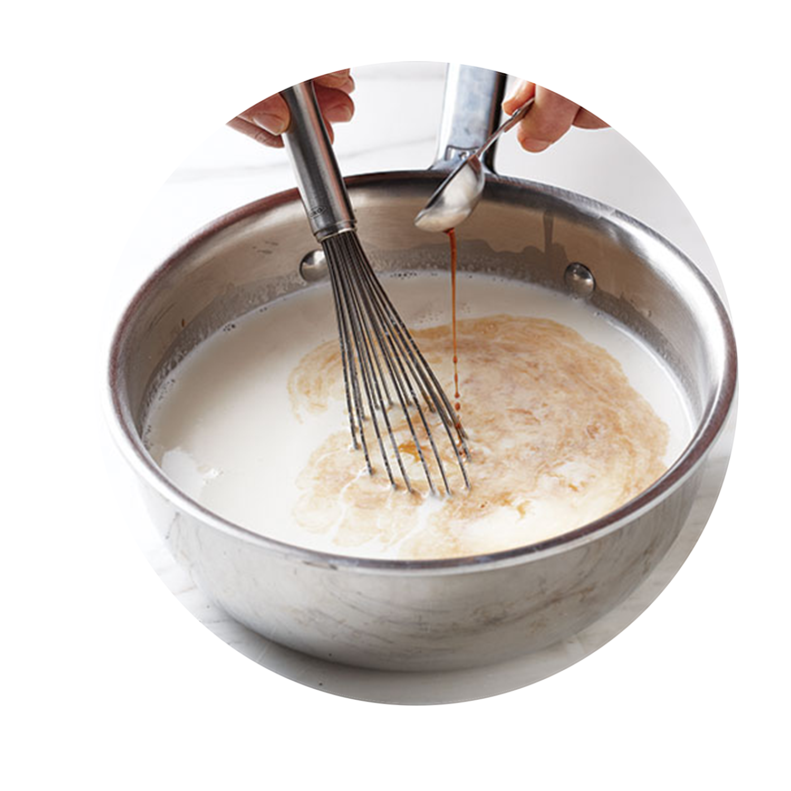
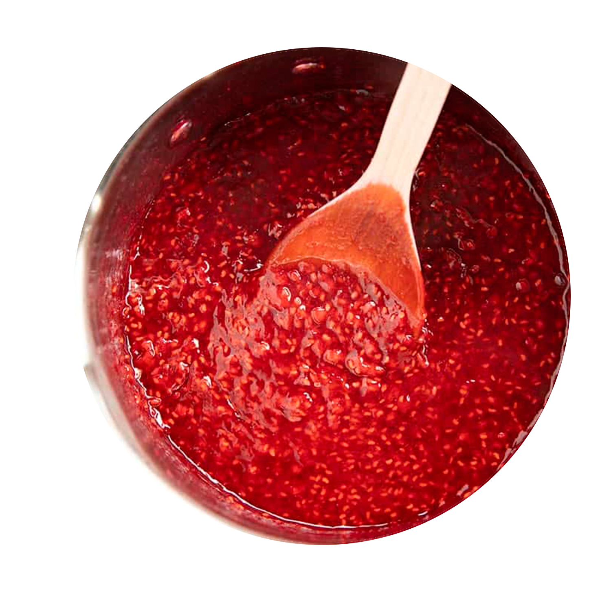

Panna Cotta
Recipe By: CHERYLA33 and Natasha Kravchuk
Prep: 5 min | Cook: 5 min | Ready: 4 hours | Serves: 6
Ingredients
0.3
cups of skim milk
1
envelopes of unflavored gelatin
2.5
cups of heavy cream
0.5
cups of white sugar
1.5
teaspoons of vanilla extract
2
cups of raspberries
3
teaspoons of sugar
0.5
lemon juice
Directions
Part 1: Base
 1
Pour milk into a small bowl, and stir in the gelatin powder. Set aside. 2
Bring to a full boil, watching carefully, as the cream will quickly rise to the top of the pan. Pour the gelatin and milk into the cream, stirring until completely dissolved. 3
Cook for one minute, stirring constantly. Remove from heat, stir in the vanilla and pour into six individual ramekin dishes. 4
Cool the ramekins uncovered at room temperature. When cool, cover with plastic wrap, and refrigerate for at least 4 hours, but preferably overnight before serving.
Part 2: Sauce
 1
In a small sauce pan, combine 1 cup berries, 1/2 Tbsp lemon juice and 3 Tbsp sugar. Bring to a low boil and cook 4-5 min or until syrupy. 2
Stir in remaining 1 cup of fresh berries and remove from heat. When syrup is at room temp or just barely warm, spoon it over the top of chilled panna cottas.